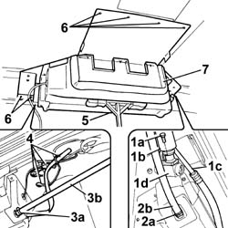

5040C60 AIR CONDITIONING EVAPORATING UNIT - R.R.
- Path
- Procedures > 50 AUXILIARY UNITS > 5040 AIR CONDITIONING CASING AND COMPONENTS > 5040C AIR CONDITIONER BOX AND COMPONENTS > 5040C60 AIR CONDITIONING EVAPORATING UNIT - R.R.
- Kind
- repair procedure (removal / refitting; the operation number is the code)
- Applies to
- all engines; all production periods
- Interactive page
- https://sloeber94.github.io/elrnDB-fDct/en/#/244001299
Applies to: all engines; all production periods; only with equipment: Supplementary air conditioner
 Removing
Removing
 Refitting
Refitting- Disconnect the negative battery terminal.
Op. 0010T84 COOLANT FOR AIR CONDITIONING SYSTEM DEHYDRATE AND RECHARGE
Op. 5010B65 EVAPORATOR/CONVEYOR UNIT MIDDLE LINING on the roof panel - R.R.
Op. 5010B61 EVAPORATOR/CONVEYOR UNIT SIDE LINING on the roof panel, left or right (one) - R.R.
Left side
1. Undo bolt (1a) and disconnect pipe (1b) from expansion valve to compressor and (1c) from bulkhead coupling to expansion valve (1d).
2. Open the band (2a) and remove the condensate drain pipe (2b).
3. Open the band (3a) and remove the condensate drain pipe (3b).
4. Disconnect the electrical connections and release the wiring from the evaporator mount.
5. Place an appropriate support tool under the evaporator.
6. Drill out the retaining rivets.
7. Remove the evaporator.

Applies to: all engines; all production periods; only with equipment: Supplementary air conditioner
Refitting
Removing- Fit the evaporator in its seat and secure with rivets.
- Remove the tool supporting the air conditioner evaporator.
- Connect the electrical connections and renew the fastening bands.
- Connect the condensate drain pipes and renew the retaining collars.
- Connect the pipes to the expansion valve and tighten the bolt.
Op. 5010B61 EVAPORATOR/CONVEYOR UNIT SIDE LINING on the roof panel, left or right (one) - R.R.
Left side
Op. 5010B65 EVAPORATOR/CONVEYOR UNIT MIDDLE LINING on the roof panel - R.R.
Op. 0010T84 COOLANT FOR AIR CONDITIONING SYSTEM DEHYDRATE AND RECHARGE
- Disconnect the negative battery terminal.
Topics linked from this page (3)
- 0010T84 COOLANT FOR AIR CONDITIONING SYSTEM DEHYDRATE AND RECHARGE
- 5010B61 EVAPORATOR/CONVEYOR UNIT SIDE LINING on the roof panel, left or right (one) - R.R.
- 5010B65 EVAPORATOR/CONVEYOR UNIT MIDDLE LINING on the roof panel - R.R.